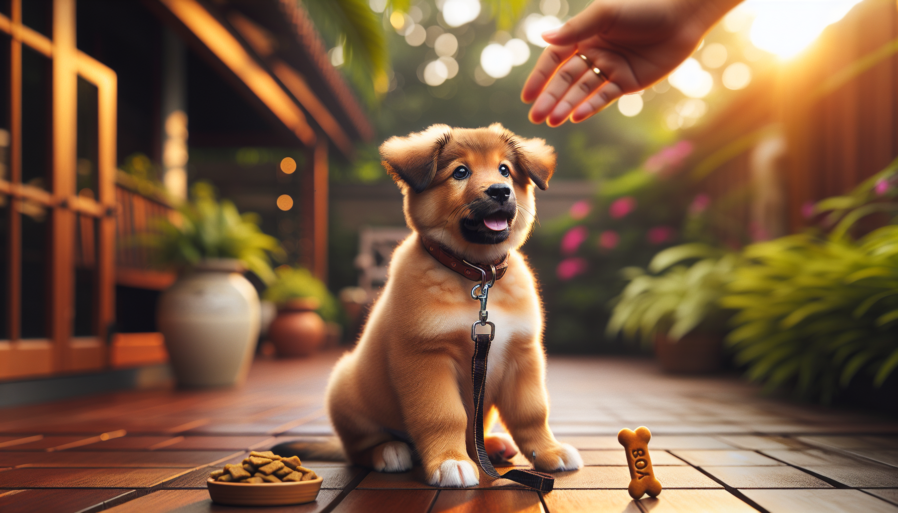

If you are raising a puppy or helping a newly adopted rescue settle into home life, early training can make a huge difference. The first six months are not about creating a perfectly obedient dog. They are about building communication, trust, and habits that support safety and calm behavior for years to come.
The good news is that you do not need to teach dozens of cues right away. In fact, most dogs do best when owners focus on a small set of practical, high-value commands and teach them consistently. Using reward-based methods backed by behavioral science, you can help your dog learn faster, reduce frustration, and create a positive relationship around training.
Below are five commands every dog should know by 6 months, whether you are working with a young puppy, a rescue dog, or an older dog catching up on basics. These commands support everyday life, help prevent common behavior problems, and improve safety in real-world situations.
Dogs learn constantly, whether we are actively teaching them or not. During the first months at home, they are forming associations about people, routines, environments, and what behaviors get rewarded. This is why early training matters so much. It is easier to build good habits from the start than to undo rehearsed unwanted behavior later.
At this age, your goal should be progress, not perfection. Short, frequent training sessions work best. Aim for one to five minutes at a time, several times a day. Use treats, praise, toys, and life rewards like going outside or getting to greet someone. Reward-based training encourages your dog to think, stay engaged, and repeat behaviors that lead to good outcomes.
Before we get into the five must-know commands, keep these training principles in mind:
Sit is often the first command people teach, and for good reason. It is simple, practical, and useful in daily life. A dog who can sit on cue is easier to manage when greeting visitors, waiting for meals, pausing before going out the door, or settling during exciting moments.
From a behavior perspective, sit gives your dog an alternative to jumping, darting, or pacing. It is not just a trick. It is a foundation skill for impulse control.
To teach sit, hold a treat near your dog's nose and slowly move it upward and slightly back. As your dog follows the treat with their head, their rear will usually lower to the ground. The moment they sit, mark it with a cheerful word like “yes” or a clicker, then reward. Once your dog is offering the movement reliably, add the verbal cue “sit.”
Keep practicing in real-life moments. Ask for a sit before clipping on the leash, opening the door, or putting down dinner. This helps your dog learn that calm behavior makes good things happen.
If there is one command that truly matters for safety, it is come. A strong recall can help prevent accidents if your dog slips out a door, heads toward traffic, or becomes distracted in an unfamiliar area. For rescue adopters, recall also helps build connection and trust in a new environment.
Many owners make the mistake of only using “come” when something fun is ending, like leaving the park or going inside. That can weaken the cue over time. Instead, teach your dog that coming to you is always rewarding.
Start in a quiet room. Say your dog’s name followed by “come” in a happy, inviting voice. Move backward a few steps to encourage pursuit. When your dog reaches you, reward generously with treats, praise, or play. Make it feel like the best choice they could make.
As your dog improves, practice from longer distances and in more distracting spaces. Use a long line outdoors for safety while training. Never punish your dog for coming to you, even if they were doing something you did not like before. You want recall to remain positive and reliable.
Stay teaches your dog to hold position until released. This skill can be incredibly useful at doors, around guests, during vet visits, and in busy household routines. It also strengthens emotional regulation by teaching your dog that waiting calmly is rewarding.
Start with your dog in a sit or down. Say “stay,” pause for one second, then reward before your dog moves. That is enough for the first repetition. Gradually increase duration, then add distance, then mild distractions. Training experts often describe this as working on the three Ds: duration, distance, and distraction. Increase only one at a time.
Be sure to teach a release word such as “okay” or “free.” Without a release cue, your dog may not understand when the exercise ends. Rewarding the release can also keep your dog engaged and prevent breaking position early.
Remember that stay is hard for young dogs. Expect small wins and build slowly. A few successful seconds are more valuable than repeated failures.
Down is one of the most useful commands for helping dogs settle. While sit is active and alert, down is more restful. It can help your dog relax during family meals, in waiting rooms, at outdoor cafes, or whenever you need a calmer state of mind.
For many dogs, especially energetic puppies, down can also reduce arousal. That makes it a great cue for teaching polite behavior in stimulating environments.
To teach down, begin with your dog in a sit or standing position. Hold a treat at their nose, then slowly lower it straight to the floor and slightly outward. As your dog follows the treat, their elbows should move toward the ground. The moment they lie down, mark and reward. If luring is difficult, try capturing the behavior by rewarding your dog whenever they naturally lie down on their own.
Practice down in quiet spaces first. Then generalize it to different rooms, the yard, and eventually public environments. Pairing down with calm reinforcement, like slow praise and steady treat delivery, can help your dog remain settled longer.
Leave it is a powerful safety cue that tells your dog to disengage from something and look away. This can prevent your dog from picking up harmful objects, grabbing dropped food, chasing something inappropriate, or fixating on distractions during walks.
Unlike commands that ask your dog to do something physical, leave it teaches inhibition and choice. That is why it is such an important life skill.
Begin with a treat in your closed hand. Present your hand to your dog and let them sniff or investigate. The moment they stop trying to get the treat, even briefly, mark and reward with a different treat from your other hand. Repeat until your dog quickly backs off when they see the closed hand. Then add the cue “leave it.”
As your dog improves, progress to a treat on the floor covered by your hand, then uncovered at a distance, and eventually to real-life items during walks. Always set your dog up to succeed. Do not jump too quickly to highly tempting objects without practice.
Leave it is especially valuable for puppies who explore the world with their mouths and for rescue dogs who may scavenge due to past experiences.
Teaching a command in the living room is only the first step. Dogs do not automatically generalize skills well, so a cue learned at home may fall apart outside, around visitors, or near other dogs. Reliability comes from thoughtful practice in gradually more challenging settings.
Here are a few ways to strengthen all five commands:
It is also important to watch your dog’s emotional state. Learning happens best when your dog feels safe and engaged. If they are too stressed, excited, or overwhelmed, lower the difficulty and return to basics.
Even the best-intentioned owners can accidentally slow progress. One common mistake is repeating cues over and over. If you say “sit, sit, sit” while your dog ignores you, the word begins to lose meaning. Instead, say the cue once, help your dog succeed, and reward the correct response.
Another mistake is moving too fast. A dog who can stay for five seconds in the kitchen is not automatically ready to stay for one minute at the front door. Build skills in small steps.
Finally, avoid using commands only when you need to stop fun. If “come” always means the park ends, or “down” always means excitement is over, your dog may become less enthusiastic about responding. Balance training with rewards, play, and positive experiences.
By 6 months, your dog does not need to know everything. But learning sit, come, stay, down, and leave it gives them a strong foundation for safety, self-control, and successful family life. These five commands are practical, teachable, and highly relevant for puppies, rescue adopters, and first-time dog owners alike.
Keep your expectations realistic, celebrate progress, and remember that consistency matters more than intensity. A few minutes of thoughtful training each day can create lasting results and a stronger bond with your dog.
If you want step-by-step help building good manners and confidence at every stage, get our full Dog Training eBook series — new titles added weekly.